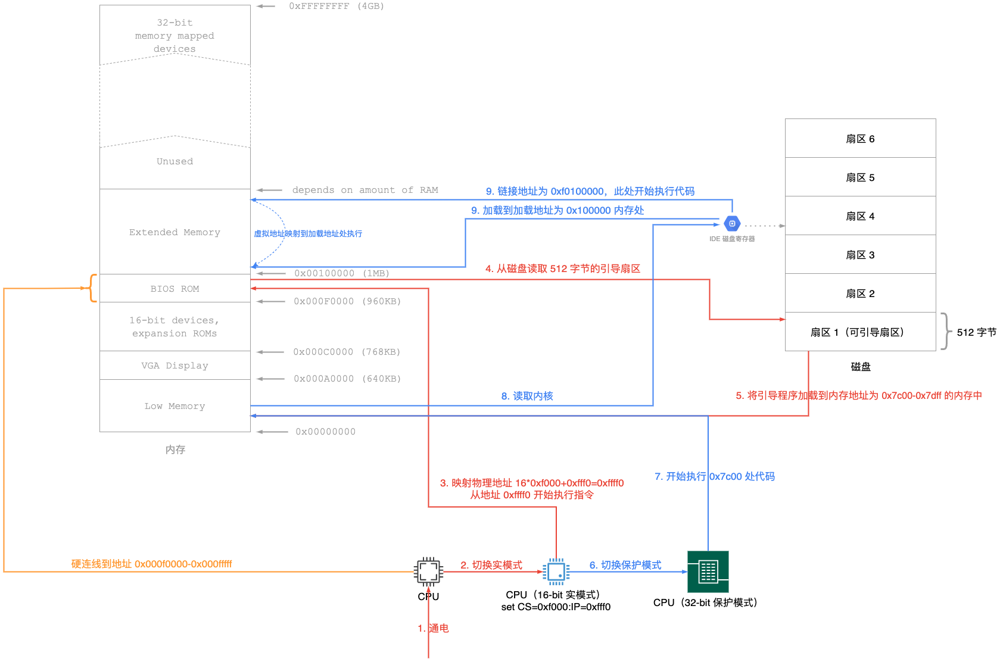

【MIT 6.828】3. PC 启动流程
本节学习 PC 启动的详细流程
0x00 非官方解读
6.828 实验使用的是 386 CPU，但是 386 CPU 一上电以后，处于 16 位的实模式，与 8086 CPU 很相似，不清楚 8086 的可以学习文章操作系统基础知识概览
CPU 一上电，CS=0xF000、IP=0xFFF0，地址为 0xFFFF0，这个地址刚好在 BIOS ROM 中，所以先执行 BIOS 中的代码。
BIOS 执行流程：
- 上电自检（Power On Self Test）
- 加载磁盘的第一个可引导扇区，一个扇区大小为 512 字节，如何判断该删除时可引导的？判断最后两个字节为
0xAA55则表示该扇区可引导 - BIOS 会把该扇区加载到段地址为 0x0000，偏移地址为 0x7c00 内存处
- 然后使用跳转指令跳到 CS=0x0000、IP=0x7c00 处开始执行
- 至此，BIOS 完成了自己的使命，把执行流交给了 0x7c00 处的代码，所以我们需要做的就是在磁盘的第一个扇区存放我们的代码。
0x01 官方解读（Lab 1: Booting a PC）
实验分为三部分：
- Part 1：主要是熟悉 x86 汇编语言、QEMU x86 仿真器和 PC 的开机引导过程
- Part 2：主要是学习 6.828 内核的 boot 引导过程，代码的 boot 目录下
- Part 3：主要学习 6.828 中使用的 JOS 的内核初始化模型，代码在 kern 目录下
下载代码：
athena% mkdir ~/6.828
athena% cd ~/6.828
athena% add git
athena% git clone https://pdos.csail.mit.edu/6.828/2018/jos.git lab
Cloning into lab...
athena% cd lab
athena%
Part 1: PC Bootstrap
x86 汇编
本实验使用的是 GNU 使用的 AT&T 语法的汇编语言，但是你如果实习 Intel语法的汇编语言，那更利于你学习本课程。
推荐学习书籍《PC 汇编语言》
模拟 x86 运行
我们不需要在真实的机器上运行&调试我们的程序，那样是在太麻烦了。在 6.828 课程中，我们使用 QEMU 模拟器来模拟 x86 操作系统的运行，另外还可以使用 GDB 来调试。
执行一下命令，可以模拟 JOS 系统的启动：
athena% cd lab
athena% make
+ as kern/entry.S
+ cc kern/entrypgdir.c
+ cc kern/init.c
+ cc kern/console.c
+ cc kern/monitor.c
+ cc kern/printf.c
+ cc kern/kdebug.c
+ cc lib/printfmt.c
+ cc lib/readline.c
+ cc lib/string.c
+ ld obj/kern/kernel
+ as boot/boot.S
+ cc -Os boot/main.c
+ ld boot/boot
boot block is 380 bytes (max 510)
+ mk obj/kern/kernel.img
athena% make qemu-nox
Booting from Hard Disk...
6828 decimal is XXX octal!
entering test_backtrace 5
entering test_backtrace 4
entering test_backtrace 3
entering test_backtrace 2
entering test_backtrace 1
entering test_backtrace 0
leaving test_backtrace 0
leaving test_backtrace 1
leaving test_backtrace 2
leaving test_backtrace 3
leaving test_backtrace 4
leaving test_backtrace 5
Welcome to the JOS kernel monitor!
Type 'help' for a list of commands.
K>
PC 的物理地址空间
PC 的物理地址空间是 hard-wired 的，如下所示：
+------------------+ <- 0xFFFFFFFF (4GB)
| 32-bit |
| memory mapped |
| devices |
| |
/\/\/\/\/\/\/\/\/\/\
/\/\/\/\/\/\/\/\/\/\
| |
| Unused |
| |
+------------------+ <- depends on amount of RAM
| |
| |
| Extended Memory |
| |
| |
+------------------+ <- 0x00100000 (1MB)
| BIOS ROM |
+------------------+ <- 0x000F0000 (960KB)
| 16-bit devices, |
| expansion ROMs |
+------------------+ <- 0x000C0000 (768KB)
| VGA Display |
+------------------+ <- 0x000A0000 (640KB)
| |
| Low Memory |
| |
+------------------+ <- 0x00000000
早期，基于 16 位 Intel 8088 处理器的电脑，最大只能寻址 1M 的物理内存。所以地址空间是从 0x00000000 到 0x000FFFFF（20-bit，2^20=1M），而不是 0xFFFFFFFF。
标记为 Low Memory 的 640K 内存区域，是早期 PC 可以使用的 RAM；实际上，跟早期的 PC，只能配置 16KB、32KB、64KB 的 RAM。
0x000A0000 到 0x000FFFFF 的 384K 内存区域是有硬件为视频显示和外部设备固件保留的。
0x000F0000 到 0x000FFFFF 的 64K 内存是为 BIOS（Basic Input/Output System，基本输入输出系统）保留的，这个是非常重要的一部分内存区域。早期的 PC 中，BIOS 保存在 ROM（read-only memory）中，但是现在保存在闪存（译者注：其实也就是内存）中。BIOS 的任务是执行基础的系统初始化工作，例如：激活 video card、检查内存等。初始化检查完成以后，BIOS 会从磁盘、CD-ROM 等位置加载操作系统，然后将机器的控制权交给操作系统。
Intel 最后使用 80286（支持 16M）和 80386（支持 4G）处理器突破了 1M 的内存限制，但是整体 PC 的架构还是保留了低 1M 物理地址空间的原始布局，以确保与现有软件的兼容。所以现代的 PC 中存在一个从 0x000A0000 到 0x00100000 的特殊内存区域，所以 RAM 也被区分为 low memory 和 extended memory，low memory 指的就是“特殊区域”的前 640K 内存，extended memory 指的就是其他内存 RAM 内存区域。此外，32-bit 物理内存空间的最顶部，首先就是物理 RAM，他由 BIOS 保留，专为 32-bit PCI 设备使用。
最新的 x86 处理器已经突破了 4G RAM 内存，因此地址空间可以进一步扩展到 0xFFFFFFFF 以上，因此，和 16-bit 一样，64-bit 处理器也需要为 32-bit 处理器留出一部分“特殊区域”的 RAM，以此来兼容 32-bit 程序。
这里就解答了：为什么很多程序都需要编译成 32 位版本和 64 位版本？
就是因为 32-bit 处理器和 64-bit 处理器的物理内存空间不一样。
在本课程中，为了简单，其实也是 JOS 本身的设计局限性，JOS 只使用 PC 物理内存的前 256M，所以我们假设所有的 PC 都只有 32 位物理地址空间。
ROM BIOS
本节将学习使用 QEMU 的调试工具来研究 IA-32 计算机如何启动
首先，打开两个终端，切换到 lab 目录下，终端 A 输入 make qemu-gdb (或者 make qemu-nox-gdb)，此时启动了 QEMU，但是在处理器执行第一条指令之前停止了，此时在等待 GDB 的连接。在终端 B 中，执行 make gdb，将看到下面的输出：
athena% make gdb
GNU gdb (GDB) 6.8-debian
Copyright (C) 2008 Free Software Foundation, Inc.
License GPLv3+: GNU GPL version 3 or later <http://gnu.org/licenses/gpl.html>
This is free software: you are free to change and redistribute it.
There is NO WARRANTY, to the extent permitted by law. Type "show copying"
and "show warranty" for details.
This GDB was configured as "i486-linux-gnu".
+ target remote localhost:26000
The target architecture is assumed to be i8086
[f000:fff0] 0xffff0: ljmp $0xf000,$0xe05b
0x0000fff0 in ?? ()
+ symbol-file obj/kern/kernel
(gdb)
lab 提供了一个 .gdbinit 文件，该文件设置 GDB 来调试早期的 16-bit 引导程序，并连接侦听 QEMU。（如果不起作用，则需要手动添加 add-auto-load-safe-path 到 .gdbinit 文件中）
[f000:fff0] 0xffff0: ljmp $0xf000,$0xe05b 这行是 GDB 对将被执行的指令的反汇编，从这行我们可以得到如下信息：
- PC 从 0x000ffff0 物理地址开始执行，该地址位于为 BIOS ROM 保留的 64K 地址的最顶端。
- PC 开始执行
CS=0xf000:IP=0xfff0位置的代码（不清楚寄存器的可以学习下这篇文章：操作系统基础知识概览） - 要执行的第一条指令是 jmp 指令，它跳转到段地址为
CS=0xf000:IP=0xe05b处
为什么 QEMU 是这样开始的？
因为 8088 处理器就是这样设计的。为什么要这样设计？因为不这样设计的话，机器通电以后，CPU 不知道该执行哪块的指令。所以 PC 中的 BIOS 是
hard-wired（硬连线）到地址0x000f0000-0x000fffff的，所以机器在上电以后，BIOS 会先拿到机器的控制权（因为此时 RAM 中没有处理器可以执行的程序），执行初始化检查，检查完以后，将控制权再交给操作系统。QEMU 模拟器自带了 BIOS，该 BIOS 被放置在处理器模拟物理地址空间的位置上，当处理器被 reset，模拟的处理器则会进入
real mode（实模式），并且设置CS=0xf000:IP=0xfff0，所以将从CS:IP代码段开始执行。
段地址 CS=0xf000:IP=0xfff0 如何转变为物理地址？
电脑刚通电启动，会进入
real mode，该模式下地址转换通过公式（physical address = 16 * segment + offset）进行。当CS=0xf000:IP=0xfff0时，物理地址为：16 * 0xf000 + 0xfff0 = 0xf0000 + 0xfff0 = 0xffff0（2 进制乘以 16 相当于左移四位，16 进制下相当于左移一位）。0xffff0 是 BIOS（0x100000）内存区域最顶部的 16 个字节。BIOS 做的第一件事就是将 jmp 跳转到 BIOS 中最顶部的位置开始执行指令。
当 BIOS 开始运行时，它会设置一个中断描述符表（interrupt descriptor table），并且初始化各种设备，例如 VGA 等，这时 QEMU 终端会打出 “Starting SeaBIOS” 信息。
初始化 PCI 总线和 BIOS 必须的设备后，将会查找可引导设备，例如软盘、硬盘、CD_ROM 等。最后，BIOS 会引导加载程序（boot loader），并将控制权移交给它。
Part 2: The Boot Loader
PC 的软盘和硬盘被划分为多个 512 字节的区域，该 512 字节区域被称为扇区（sectors）。扇区是磁盘的最小传输单位：每一次读写必须是一个或多个扇区，并且在扇区边界对齐。如果一个磁盘是可引导的，那么它的第一个扇区必须是引导扇区（boot sector），因为这是引导程序代码所在的位置。当 BIOS 找到可引导的软盘或者硬盘时，他将位于第一个扇区的 512-byte 的引导扇区加载到物理地址为 0x7c00-0x7dff 的内存中，然后使用 jmp 指令将 CS:IP 设置为 0000:7c00，将控制权传递给引导加载程序。就像 加载 BIOS 的地址一样，这些地址看起来是任意地址，但是它们对于 PC 而言，是标准化的，也是固定的。
在 PC 的发展过程中，从 CD-ROM 引导的能力出现得晚得多，因此 PC 架构师借此机会稍微重新思考了引导过程。因此，现代的 BIOS 从 CD-ROM 引导的方式更复杂（也更强大）。CD-ROMs 使用 2048 字节的扇区代替 512 字节，这样 BIOS 就可以在控制权移交之前，从磁盘加载更大的引导镜像到内存中。
对于 6.828 实验来说，我们使用传统的硬盘引导机制，这意味着引导加载程序必须容纳在 512 字节以内。引导加载程序（boot loader）包含一个汇编源文件（boot/boot.S）和一个 C 源文件（boot/main.c）,可以详细看下这两个文件。引导加载程序（boot loader）必须执行两个 main functions：
- 首先引导加载程序（boot loader）将处理器从实模式（real mode）切换到 32 位保护模式（32-bit protected mode），因为只有在 32 位保护模式（32-bit protected mode）下，软件才能访问处理器物理地址空间中 1M 以上的所有内存。保护模式（protected mode）在《PC 汇编语言》 PDF 版本的 1.2.7 和 1.2.8 节有详细的介绍。这个阶段，你只需要了解段地址到物理地址的转换在在保护模式（protected mode）下是不同的，转换偏移量（offset）是 32 位，而不是 16 位的。
- 其次，引导加载程序（boot loader）通过 x86
特殊的 I/O 指令直接访问 IDE 磁盘设备寄存器，来从磁盘读取内核（kernel）。如果想更好地理解此处的特定的 I/O 指令的含义，请参考“IDE硬盘驱动器控制器”部分。本课程中，不需要深入了解特殊设备编程的知识：编写设备驱动程序其实是操作系统开发的一个非常重要的部分，也是最无趣的部分之一。
理解完引导加载程序（boot loader）源码后，接下来看下 obj/boot/boot.asm 文件，这个文件是使用 GNU Makefile 编译引导加载程序（boot loader）生成的引导加载程序（boot loader）的反汇编。这个反汇编文件可以很容易的看到所有引导加载程序（boot loader）的代码在物理内存中的确切位置，并且在 GDB 调试时跟容易的跟踪发生的事情。
可以使用 b 命令在 GDB 中设置地址断点，例如：命令 b *0x7c00 会在地址 0x7c00 处设置一个断点。到达断点后，你可以使用 c 和 si 命令继续执行（c 使 QEMU 继续执行，直到遇到下一个断点或者在 QEMU 终端中按下 Ctrl-c；si N 可以一次执行 N 个指令）。
如果要检查内存中要执行的指令（除了 GDB 自动打印的下一个要执行的指令之外），可以使用 x/i 命令。此命令的语法为 x/Ni ADDR，其中 N 是要反汇编的连续指令数，ADDR 是要开始反汇编的内存地址。
简单画了个图，如下所示：

加载内核
接下来，将根据 boot/main.c 文件来详细学习引导加载程序（boot loader）的 C 语言部分。（需要温习下 C 语言编程指针部分内容）
什么是 ELF 二进制文件？
当编译并链接一个 C 程序（比如 JOS 内核程序）时，编译器会将每个 C 源文件（
.c）转换成一个 object 文件（.o），object 文件包含汇编语言指令，这些指令以硬件所期望的二进制格式编码。然后，链接器将所有编译的 object 文件组合成一个二进制镜像（binary image），例如：
obj/kern/kernel，在这里他就是一个 ELF 格式的二进制文件，表示“可执行和可链接格式”
我们可以简单的认为，ELF 可执行文件带有加载信息的头，信息头后面紧跟的是多个程序段，每个程序段都是连续的一组代码或者数据，会在指定的地址加载到内存中。引导加载程序（boot loader）不会修改代码或数据，他将其加载到内存中并开始执行。
一个 ELF 二进制文件以一个固定长度的 ELF 头（fixed-length ELF header）开始，然后是一个可变长度的程序头（variable-length program header），程序头列出了要加载的每个程序段。inc/elf.h 文件中定义了这些 ELF 头，我们需要关注的程序段如下所示：
.text：程序的可执行指令.rodata：只读数据。比如编译器生成的 ASCII 字符串常量。（不会限制硬件写入）.data：数据部分保存程序的初始化数据，例如使用初始化器声明的全局变量（int x = 5）
当链接器开始计算程序的内存分布时，它会为未初始化的全局变量（例如：int x）保留空间，该空间位于名叫 .bss 的段（section）中，它紧跟在 .data 段（section）之后。